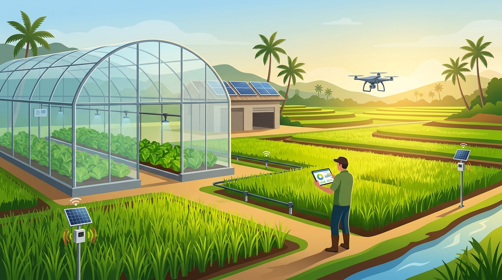

🧠 Antigravity AI อัจฉริยะ — ถามได้ทุกเรื่อง ขอรายงานฉบับสมบูรณ์ & แก้ไขเว็บเรียลไทม์
ขับเคลื่อนด้วย Cloud LLM อัจฉริยะ (ไม่ต้องใส่คีย์ก็ฉลาดเต็มรูปแบบ) วิเคราะห์เชิงลึก ออกรายงาน A4/Word และสั่งแก้ไขหน้าเว็บด้วยภาษาธรรมชาติได้ทันที
🧠 การวินิจฉัยฟาร์มอัตโนมัติวันนี้
เชื่อมต่อ Gemini API Key (ทางเลือกเสริม)
ระบบ AI ในตัวสามารถออกรายงานฉบับเต็มและแก้ไขหน้าเว็บแบบเรียลไทม์ได้ทันที 100% โดยไม่ต้องใส่คีย์ แต่หากต้องการเชื่อมต่อ Google Gemini API เพิ่มเติม สามารถวางคีย์ด้านล่างได้ครับ
สร้างเอกสารรายงานสรุปผล ตารางสถิติ และบทวิเคราะห์พร้อมพิมพ์/ดาวน์โหลดทันที
เลือกรูปแบบรายงานที่ต้องการ หรือพิมพ์บอกในแชทว่า "ขอรายงาน" ระบบจะดึงข้อมูลจริงจากทุกแปลงมาจัดทำเป็นรายงานทางการทันที
แก้ไขชื่อเว็บ แบนเนอร์ โทนสี โหมดมืด และข้อมูลแปลงปลูก/กราฟแบบเรียลไทม์ทันที
ทุกการแก้ไขด้านล่างจะเปลี่ยนหน้าเว็บและกราฟทันทีแบบเรียลไทม์ (ไม่ต้องรีเฟรชหน้า) หรือเปิดโหมด "คลิกแก้ข้อความบนหน้าเว็บโดยตรง" ก็ได้
📝 แก้ไขหัวข้อเว็บไซต์ ป้ายชื่อ และแบนเนอร์ประกาศ (พิมพ์ปุ๊บเปลี่ยนปั๊บ)
🎨 ปรับแต่งโทนสี โหมดมืด ขนาดตัวอักษร และการแสดงผลเรียลไทม์
🌱 ตารางแก้ไขข้อมูลแปลงเพาะปลูก ความสูง ความชื้น และค่า pH แบบเรียลไทม์
เปลี่ยนชื่อแปลง ความสูง จำนวนใบ ความชื้น หรือพิกัดในตารางนี้ กราฟทุก 30 นาที โมเดล 3D และรายงาน AI จะอัปเดตตามทันที!
| รหัส | ชื่อแปลง / ชนิดพืช (แก้สดได้) | โซนพื้นที่ | อายุ (วัน) | ความสูง (ซม.) | จำนวนใบ | ความชื้น (%) | ค่า pH | จัดการ |
|---|
📈 กราฟการเติบโตทุก 30 นาที (กราฟรวมทุกต้น & กราฟแยกรายต้น)
เปรียบเทียบแนวโน้มเส้นกราฟแบบรวมทุกต้นและกราฟแยกรายต้นแบบเรียลไทม์
แนวโน้มการเติบโตของต้นไม้ทุกต้นรวมกัน (ทุก 30 นาที)
แสดงเส้นแนวโน้มพร้อมค่าเฉลี่ยรวม
กราฟการเติบโตแยกเฉพาะแต่ละต้น (ทุก 30 นาที)
ดูกราฟแยกทีละต้นพร้อมปุ่มซูมดูพิกัดแผนที่และลบรายต้น
📑 รายงานสรุปกราฟ & ตารางสถิติทุก 30 นาที (พร้อมส่งออก Excel / Word)
สรุปผลการวิเคราะห์กราฟรายคาบเวลา 30 นาที ค่าเฉลี่ย (X̄), ส่วนเบี่ยงเบนมาตรฐาน (S.D.) และส่งออกเป็นไฟล์ Excel (.xls) หรือ Word (.doc) ได้ทันที
สรุปค่าการเติบโตของต้นไม้ทุกต้นแยกตามรอบเวลา 30 นาที
เลือกเวลาหรือกดปุ่มจำลองวิ่งสรุปผลทีละ 30 นาที เพื่อดูค่าสรุปของต้นไม้ทุกต้น ณ เวลานั้นๆ
บทสรุปผู้บริหารและตารางสถิติผลการวัดรายรอบ 30 นาที (X̄, S.D.)
🌳 เพิ่มต้นไม้ใหม่เข้าสู่ระบบ กราฟ 30 นาที และแผนที่ดาวเทียม
เลือกพันธุ์ไม้สำเร็จรูปด้วยคลิกเดียว หรือกรอกชื่อพันธุ์ไม้ ความสูง ความชื้น และพิกัด GPS เพื่อสร้างกราฟและรายงานทันที
🌱 รายชื่อต้นไม้ทั้งหมดในระบบ (แก้ไขชื่อ ความสูง ความชื้น หรือลบได้ทันที)
ทุกต้นในตารางนี้จะแสดงอยู่ในหน้ากราฟ 30 นาที, หน้ารายงานกราฟ และไฟล์ Excel / Word อัตโนมัติ
| ลำดับ | ชื่อต้นไม้ / พันธุ์ไม้ (พิมพ์แก้สดได้) | โซนพื้นที่ | อายุ (วัน) | ความสูง (ซม.) | จำนวนใบ | ความชื้น (%) | ค่า pH | จัดการ |
|---|
🧊 แบบจำลองสมาร์ทฟาร์ม 3 มิติ
หมุนมุมกล้อง 360° ซูมเข้า-ออก และติดตามการเติบโตของแปลงปลูก
🌍 ภาพรวมสมาร์ทฟาร์ม จ.นครพนม
แสดงแปลงเพาะปลูกทั้งหมด 4 โซน
🎛️ ผังควบคุมสมาร์ทฟาร์ม 2D & IoT
ควบคุมระบบน้ำ พัดลมระบายอากาศ และระบบให้ปุ๋ยในแต่ละโซน
📋 กระดานติดตามระยะการเติบโต (Kanban)
ติดตามสถานะพืชผลแยกตาม 4 ระยะการเจริญเติบโต
💰 ประมาณการผลผลิตและรายได้
คำนวณผลผลิตและรายได้คาดการณ์ตามพื้นที่เพาะปลูก
ติดตามพัฒนาการพืชผลเศรษฐกิจ จ.นครพนม
ตรวจสอบการเติบโต 5 ระยะ ความสูง จำนวนใบ ความชื้น และค่า pH พร้อมแผนที่พิกัด GIS

เพาะเมล็ด ➔ ต้นกล้า ➔ แตกใบ ➔ ออกดอก/ติดผล ➔ เก็บเกี่ยว
🌱 การ์ดติดตามระยะการเติบโตและสุขภาพพืชรายแปลง
📅 เกณฑ์มาตรฐานระยะการเจริญเติบโต
เกณฑ์อ้างอิงในการประเมินการเติบโตและแผนการดูแลรักษา
| ระยะการเจริญเติบโต | ช่วงอายุพืชโดยประมาณ | ตัวชี้วัดการเติบโตที่สำคัญ | ความชื้นดิน & ค่า pH ที่เหมาะสม | แผนการใส่ปุ๋ยและดูแลรักษา |
|---|---|---|---|---|
| 1. ระยะต้นกล้า (Seedling) | 1 – 15 วัน | อัตราการงอก, ความสูง 5–15 ซม., ใบจริง 2–5 ใบ | ความชื้น 70–75% • pH 6.0–6.5 | ให้น้ำสม่ำเสมอ พรางแสง 50% เสริมธาตุอาหารอ่อนๆ |
| 2. ระยะเจริญเติบโตทางใบ (Vegetative) | 16 – 35 วัน | ความสูงเพิ่มเร็ว (1.2–2.0 ซม./วัน), แตกใบใหม่ 10–18 ใบ | ความชื้น 65–72% • pH 6.0–6.8 | ใส่ปุ๋ยบำรุงต้นและใบ (ไนโตรเจนสูง) ป้องกันแมลงกินใบ |
| 3. ระยะออกดอก/ติดผล (Flowering) | 36 – 55 วัน | ลำต้นแข็งแรง, ออกดอกและติดผล, ใบสมบูรณ์สีเขียวเข้ม | ความชื้น 60–68% • pH 6.2–6.8 | เสริมฟอสฟอรัสและโพแทสเซียม ช่วยผสมเกสรและค้ำยันกิ่ง |
| 4. ระยะพร้อมเก็บเกี่ยว (Harvest) | 60 วันขึ้นไป | ขนาดผล/รวง/ทรงพุ่มได้มาตรฐาน ความหวานหรือน้ำหนักถึงเกณฑ์ | ความชื้น 55–65% • pH 6.0–6.5 | งดให้น้ำมากเกินไปก่อนเก็บเกี่ยว สุ่มตรวจคุณภาพผลผลิต |
🗺️ แผนที่พิกัดแปลงเกษตร (GIS) 📍 ปักหมุด 5 ต้น
หลังจากเพิ่มต้นไม้เสร็จ คลิกจุดไหนก็ได้บนแผนที่ (หรือลากหมุด 🌳) เพื่อปักหมุดตำแหน่งต้นไม้ได้ทันที!
📌 รายการหมุดแปลงเกษตรบนแผนที่
➕ ปักหมุดเพิ่มแปลงใหม่จากจุดที่คลิกบนแผนที่
แบบบันทึกการวัดขนาดต้นพืชและประเมินสุขภาพ
จำลองขนาดต้นพืชและวินิจฉัยสภาพแวดล้อม
ต้นพืชเจริญเติบโตอยู่ในเกณฑ์ดีเยี่ยม (AGR = 1.38 ซม./วัน) ความชื้นในดิน 68% และค่า pH 6.5 เหมาะสมต่อการดูดซึมธาตุอาหาร แนะนำให้รักษาระดับการให้น้ำตามปกติ
กราฟแนวโน้มการเจริญเติบโต
กราฟเรดาร์ดัชนีสุขภาพพืช 4 ด้าน
คะแนนประเมินความสมบูรณ์รายด้าน
สัดส่วนการบันทึกข้อมูลแยกตามแปลง
ตารางสถิติและค่าเฉลี่ยการประเมินพืชผล
เกณฑ์การแปลผล: 4.50–5.00 = ดีเยี่ยม | 3.50–4.49 = ดี | 2.50–3.49 = ปานกลาง | 1.50–2.49 = พอใช้
| รายการประเมินการเจริญเติบโตและสุขภาพพืช | ค่าเฉลี่ย (X-bar) | ส่วนเบี่ยงเบนมาตรฐาน (S.D.) | คิดเป็นร้อยละ | แปลผลคุณภาพการเติบโต |
|---|
ตารางประวัติการสำรวจและวัดการเติบโตพืชผลรายครั้ง
| วันที่สำรวจ | แปลงปลูก / ชนิดพืช | อายุ / ระยะเติบโต | ความสูง / ใบ / ชื้น / pH | คะแนนสุขภาพ | บันทึกภาคสนาม | จัดการ |
|---|
เพิ่มแปลงเพาะปลูกหรือชนิดพืชผลที่ต้องการติดตาม
สามารถกำหนดชื่อแปลง โซนโรงเรือน และพิกัดแผนที่ได้ทันที
รายชื่อแปลงเพาะปลูกและพืชผลในระบบทั้งหมด
| รหัสแปลง | ชื่อแปลงเพาะปลูก / ชนิดพืชผล | โซนพื้นที่ / พิกัด GPS | จำนวนครั้งที่สำรวจ | จัดการ |
|---|